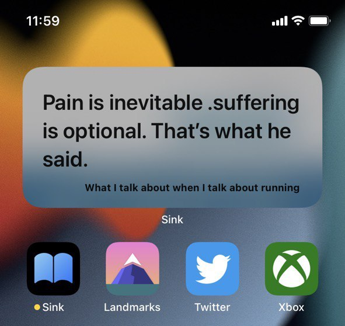

Sink书摘
全功能的书摘应用

书摘记录和保存
你收藏的珍贵书摘将放在艺术画廊一般优雅的展示页面中。

进入阅读状态
一键进入阅读空间界面，此界面可以自动为您播放音乐。

文字识别
简洁方便的书摘输入方式，还可以使用摄像头扫描实体书籍。
时间追踪
Sink能够全面的追踪您的阅读时间，让你一目了然的看出最近的阅读状况。

添加小组件
在桌面上展示实时的书摘
Follow @Feng_YQ
你收藏的珍贵书摘将放在艺术画廊一般优雅的展示页面中。
一键进入阅读空间界面，此界面可以自动为您播放音乐。
简洁方便的书摘输入方式，还可以使用摄像头扫描实体书籍。
Sink能够全面的追踪您的阅读时间，让你一目了然的看出最近的阅读状况。
在桌面上展示实时的书摘